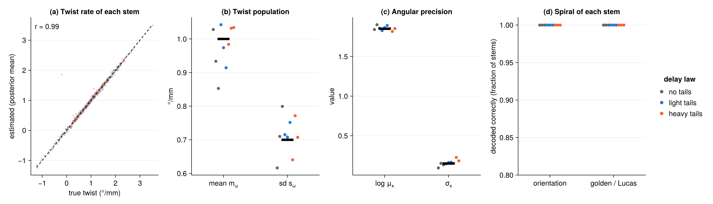
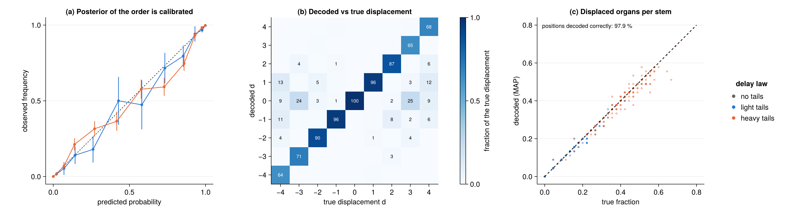
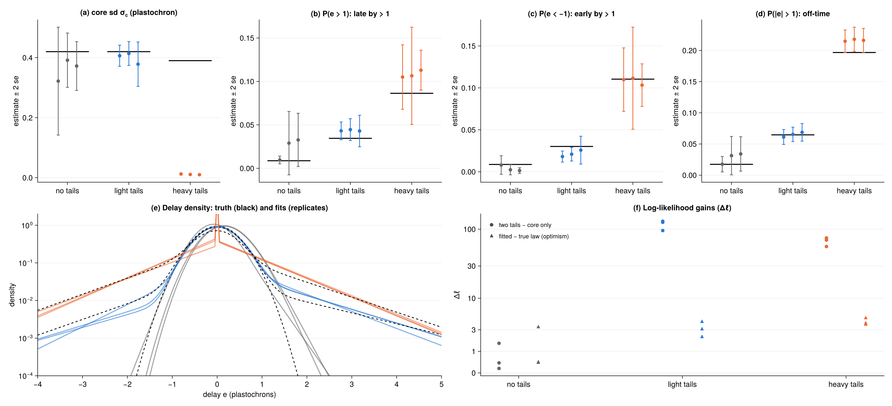
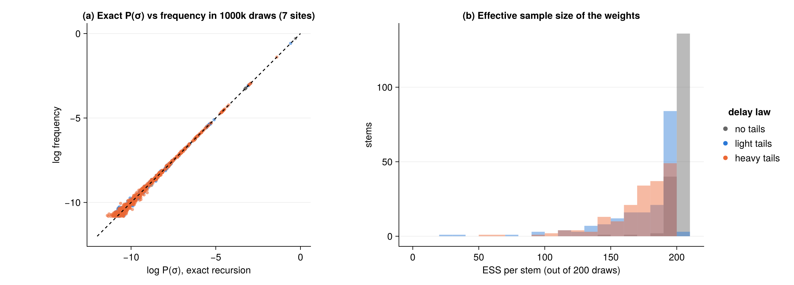
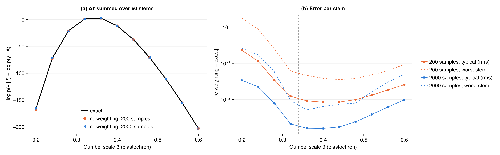

6. Validation on simulated stems
Each step of the method rests on assumptions and approximations, and could go wrong in its own way:
- the sites might not be as regular as the model assumes;
- the twist could be confused with a change of spiral;
- the posterior of the order could be overconfident;
- the re-weighting could rest on too few samples;
- the delay law could be poorly identified from orders alone;
- the plant's clock might not be as regular as the model assumes.
The way to know is to run the whole pipeline on stems whose truth is known, and compare. This page does so step by step: sites that wander (§6.2), the angle model and the twist (§6.3), the orders (§6.4), the delay law (§6.5) and a remedy for its weak point (§6.6), the two computations behind the delay law (§6.7), a clock that drifts (§6.8), and an exact check of the re-weighting (§6.9). The figures are made by docs/make_validation_figures.jl.
6.1 The simulated stems
The stems are made to resemble the Arabidopsis data:
- 60 stems of 45 organs per data set;
- internodes from about 9 mm at the base to 3 mm at the top, with log-normal noise, so the twist coordinate $x_p$ is in mm;
- an angular precision $\kappa_s$ log-normal around 6.4 ($\log\mu_\kappa = 1.85$, $\sigma_\kappa = 0.15$);
- 95 % golden spirals;
- a stem twist of $1.0 \pm 0.7$ °/mm.
The orders come from independent commitment delays (§5.2), with three delay laws (in plastochrons):
| scenario | core sd $\sigma_c$ | late tail | early tail | $P(\lvert e\rvert > 1)$ |
|---|---|---|---|---|
| no tails | 0.42 | — | — | 1.7 % |
| light tails | 0.42 | 5 % (mean 1.5) | 5.4 % (mean 1.04) | 6.5 % |
| heavy tails | 0.39 | 19.6 % (mean 1.09) | 26.9 % (mean 1.01) | 19.7 % |
The two tailed laws are laws fitted to real stems, which is why their values are not round: the light-tailed law to a wild type, the heavy-tailed law to a mutant with many off-time organs. The no-tails law asks whether the method invents tails that are not there.
Each scenario is simulated three times (three replicates, nine data sets in all). Each data set goes through the steps of the worked analysis, exactly as real data would:
fit_map(propensity model, $k = 4$, twist integrated out), with the default settings: outlier angles allowed (§2.4) and 9 twist nodes (§2.6). The simulated angles have no outliers, so this also checks that allowing them costs nothing;decode_orders(joint MAP);order_posteriorwith 200 exact samples per stem;- the
:core,:lateand:bothdelay laws byfit_delay_law; delay_law_inference(robust standard errors, se below).
In each replicate, the light- and heavy-tailed data sets are also fitted together, with a shared core (§6.6).
6.2 Sites that wander
What could go wrong. The angle noise is independent from organ to organ, around sites on a regular spiral (§2.2). If instead each site were placed relative to the previous one, the errors of the sites would add up like a random walk, and the organs would drift away from the spiral. Would the fit read the drift as permutations?
Here the sites of the light-tailed stems of §6.1 wander: site $j$ is moved by $w_j = w_{j-1} + \varepsilon_j$, $\varepsilon_j \sim \mathcal N(0, s^2)$, on top of the usual angle noise (about 23°). One data set of 60 stems of 45 organs per value of $s$, with the same orders, fitted and decoded as usual.
| $s$ (per site) | fitted $\kappa$ | displaced organs, decoded (true) | displaced by 2 or more, decoded (true) |
|---|---|---|---|
| 0° | 6.4 | 18.8 % (19.0 %) | 2.5 % (2.7 %) |
| 10° | 4.4 | 18.9 % (19.0 %) | 2.2 % (2.7 %) |
| 15° | 3.8 | 22.1 % (19.0 %) | 3.9 % (2.7 %) |
| 20° | 3.5 | 25.7 % (19.0 %) | 5.1 % (2.7 %) |
What we find.
- A small walk is absorbed. Up to 10° per site, the orders are recovered as without the walk: the walk only lowers the fitted $\kappa$, which takes it up as noise.
- A larger walk is read as displacements. From 15° per site, the drift is partly decoded as extra displacements, mostly by two sites or more.
The simulation is docs/validation_site_walk.jl.
6.3 The angle model and the twist
What could go wrong. The twist of a stem and a change of its spiral can both rotate the organs. If the model confused them, it would get the twist wrong, and then the orders.

Figure 1. The angle model, all 9 data sets (colour: delay law). (a) The twist rate of each stem, posterior mean against truth. (b) The twist population: mean and sd, truth in black. (c) The population law of the angular precision. (d) The fraction of stems whose orientation and divergence (golden or Lucas) are decoded correctly.
What we find. The twist of each stem is recovered (correlation 0.99), and so is its population: a mean of 0.85–1.04 °/mm for a truth of 1.0, an sd of 0.62–0.80 for 0.7. So is the precision of the angles ($\log\mu_\kappa$ 1.82–1.90 for 1.85). Every spiral is decoded with its correct orientation and divergence.
One stem in 540 gets a twist at a secondary mode of its likelihood (figure 1a, the point far from the diagonal). It is a reminder that the twist likelihood of a stem can have several peaks. This is why the twist is integrated out rather than fixed at its best value (§2.6, §4.5).
6.4 The orders
What could go wrong. The posterior of the order could be overconfident (or underconfident). Step 2 relies on its samples, so it must be calibrated: an event to which it gives a probability of 70 % should happen about 70 % of the time.

Figure 2. The orders. (a) Calibration of the posterior: every pair (height $p$, displacement $d$) is grouped by its posterior probability $\rho_{p,d}$, and the frequency with which $d$ is the true displacement is plotted against that probability (± 2 se). Without tails the posterior is almost always sure ($\rho$ near 0 or 1), so there is too little in between to plot; that law is left out of this panel. (b) The most probable displacement against the true one: percentage of the organs of each true displacement. Unlike (a), this panel pools all nine data sets, no tails included. The no-tails stems add mostly to $d = 0$ and $\pm 1$; displacements beyond ±1 come mostly (68–85 %) from the heavy-tailed law. (c) The fraction of displaced organs per stem, decoded against true.
What we find.
- The posterior is calibrated (figure 2a): the points lie on the diagonal. This is what makes its samples a sound input for §5.
- The most probable order is right for 98 % of the positions. Displacements of ±1 and ±2 are recovered in 87–96 % of cases, and the rare displacements of ±3 and ±4 in 64–71 % (figure 2b). When the single best order is wrong, the posterior usually shares its probability between it and the true order. This is why step 2 uses the posterior samples, not the best order alone.
6.5 The delay law
What could go wrong. The delay law is seen only through the orders it produces, and different laws can produce nearly the same orders (§5.6). Is the overtaking profile, which the orders identify, recovered? And how far can the parameters of the fitted law be trusted?
The overtaking profile. Truth (the law), then the three replicates: the profile read from the posterior orders (overtaking_profile, no delay law) and that of the fitted :both law, with the typical standard error.
| scenario | $q_1$ | $q_2$ | $q_3$ | |
|---|---|---|---|---|
| no tails | truth | 0.046 | 0.0004 | 0.0000 |
| from the orders | 0.038, 0.049, 0.047 (± 0.004) | 0.0009, 0.0004, 0.0007 (± 0.0005) | ≤ 0.0002 | |
| fitted law | 0.038, 0.049, 0.046 | 0.0008, 0.0006, 0.0007 | 0.0000 | |
| light tails | truth | 0.087 | 0.024 | 0.011 |
| from the orders | 0.087, 0.089, 0.087 (± 0.005) | 0.025, 0.025, 0.024 (± 0.003) | 0.012, 0.011, 0.008 (± 0.002) | |
| fitted law | 0.082, 0.087, 0.085 | 0.022, 0.023, 0.022 | 0.010, 0.010, 0.007 | |
| heavy tails | truth | 0.183 | 0.075 | 0.032 |
| from the orders | 0.186, 0.191, 0.189 (± 0.006) | 0.077, 0.077, 0.088 (± 0.005) | 0.030, 0.028, 0.034 (± 0.003) | |
| fitted law | 0.184, 0.186, 0.184 | 0.072, 0.071, 0.076 | 0.027, 0.026, 0.031 |
- The profile is recovered in every scenario. Most of the scatter between replicates is real: each replicate's own orders differ from the law by chance (the first no-tails replicate has a neighbour-swap rate of 0.038 in its true orders, and both estimates find 0.038).
- It does not depend on the shape of the law. Without tails, the ridge of the
:bothfit (point 1 below) moves the off-time fraction but leaves the profile where it is. - The fitted law can miss the longest overtakings. For heavy tails, the fitted law's $q_3$ is below the rate in each replicate's own true orders by 0.006–0.008 (2 to 3 standard errors), while the profile read from the orders is not: the exponential tails do not quite fit the longest displacements. The two profiles differ by 0.002–0.003 there, which is the check of §5.7.
The parameters of the fitted law.

Figure 3. The delay law fitted through the posterior orders (§5.5). (a–d) The core sd and the three tail masses: estimate ± 2 robust se for each replicate, truth in black. (e) The fitted densities (colour) and the true ones (dashed). (f) Log-likelihood gains: what the two tails add to a core-only law (circles), and how much the fitted law beats the true one (triangles, the optimism of the fit).
Truth, then the :both fits of the three replicates (the readings of §5.6):
| scenario | $\sigma_c$ | $P(e > 1)$ | $P(e < -1)$ | $P(\lvert e\rvert > 1)$ | tails gain ($\Delta\ell$) |
|---|---|---|---|---|---|
| no tails | 0.42 → 0.32, 0.39, 0.37 | 0.009 → 0.010, 0.029, 0.033 | 0.009 → 0.008, 0.002, 0.001 | 0.017 → 0.018, 0.031, 0.034 | 1.6, 0.2, 0.4 |
| light tails | 0.42 → 0.41, 0.41, 0.38 | 0.035 → 0.043, 0.045, 0.043 | 0.030 → 0.018, 0.021, 0.026 | 0.065 → 0.061, 0.065, 0.069 | 129, 125, 96 |
| heavy tails | 0.39 → 0.01, 0.01, 0.01 | 0.086 → 0.105, 0.106, 0.113 | 0.110 → 0.110, 0.111, 0.103 | 0.197 → 0.215, 0.218, 0.216 | 70, 57, 75 |
What we find, from the most to the least robust:
- No false tails. When the truth has none, the tails add 0.2 to 1.6 units of log-likelihood. The
:corefit then recovers the law: $\sigma_c$ = 0.40, 0.43, 0.42 and an off-time fraction of 0.013, 0.019, 0.018 for 0.017. The:bothfit is too flexible here (§5.6). In two replicates it puts nearly every site in a short "tail" (mean 0.2 plastochron) that only reshapes the core, and its off-time fraction drifts to 0.031–0.034, about one standard error (0.015) above the truth. When the tails gain little, read the:corefit. - Real tails are found without doubt. For both tailed laws, the tails add 57 to 129 units.
- The off-time fraction $P(|e| > 1)$ is reliable only for light tails. It is recovered within its standard error for the light-tailed law. For the heavy-tailed law it is about 0.02 too high in all three replicates (about 2 se): a 10 % overestimate when a fifth of the organs are off time. Without tails it drifts (point 1).
- The core sd is recovered when the tails are light (0.38–0.41 for 0.42), but not when they are heavy. For the heavy-tailed law (47 % of the sites in a tail), the fitted core collapses: $\sigma_c$ falls to about 0.01, below the step of the delay grid (0.05), where a narrower core no longer changes anything. Its standard error is misleadingly small. A narrow core plus more tail mass predicts nearly the same orders. The overestimated off-time fraction of point 3 comes with this collapse; a shared core (§6.6) usually removes both.
- The split between late and early leans late. For the light-tailed law, $P(e > 1)$ is overestimated (0.043–0.045 for 0.035) and $P(e < -1)$ underestimated (0.018–0.026 for 0.030). The reason is that some orders have two readings. In the order 2 3 1, the organ of site 1 sits two heights above its place. Either site 1 committed about two plastochrons late, or sites 2 and 3 each committed about one plastochron early. Both readings give the same order, and the fit tends to prefer the single late site.
- Optimism. The fitted law is tuned to the very stems on which it is scored, so it scores them a little better than the true law does: by 0.4 to 5 units. Differences of $\Delta\ell$ below about 5 between two laws are therefore not meaningful on their own.
In short: the overtaking profile is the quantity to report and to compare between groups. The parameters of the fitted law interpret it: the off-time fraction, the core sd and the late/early split are informative for laws with light tails, and should be read with the caveats of points 1, 3, 4 and 5.
6.6 A shared core
What could go wrong. Comparing two groups by their profiles needs no core sd. But to read a group with heavy tails in terms of the law (how precise a typical commitment is, how many organs are off time), point 4 is a real limitation: its core cannot be estimated, and its off-time fraction is biased with it. The core can be borrowed. If the mutant changes which organs are off time, and not the precision of a typical commitment, the mutant and its wild type share one core sd. The wild type, whose tails are light, then carries it (§5.7).
To test this, each replicate's light- and heavy-tailed data sets are fitted together, with one core sd and their own tails (fit_delay_law([light, heavy], GaussianExpTails(:both))), and the shared core is tested against separate cores (shared_core_test). The true cores are close but not equal (0.42 and 0.39): a mild violation of the hypothesis, as real data would have.
Truth, then the shared-core fit of each replicate (estimate ± se):
| replicate | shared $\sigma_c$ | off-time, light tails | off-time, heavy tails | difference | likelihood ratio ($p$) |
|---|---|---|---|---|---|
| truth | 0.42 and 0.39 | 0.065 | 0.197 | 0.132 | |
| 1 | 0.40 ± 0.02 | 0.062 ± 0.006 | 0.200 ± 0.010 | 0.138 ± 0.012 | 2.7 (0.10) |
| 2 | 0.41 ± 0.02 | 0.066 ± 0.006 | 0.203 ± 0.011 | 0.137 ± 0.012 | 2.3 (0.13) |
| 3 | 0.01 ± 0.001 | 0.093 ± 0.013 | 0.216 ± 0.010 | 0.123 ± 0.016 | 2.2 (0.14) |
With separate fits (§6.5), the heavy-tailed off-time fraction was 0.215–0.218 and the difference 0.148–0.154.
For comparison, the difference between the two groups' profiles (heavy minus light, truth 0.096, 0.052, 0.021) read from the orders, with no delay law: 0.100, 0.102, 0.102 for $q_1$ (± 0.008), 0.052, 0.052, 0.064 for $q_2$ (± 0.006) and 0.018, 0.017, 0.026 for $q_3$ (± 0.003), with a Wald χ² of 171 to 191 on 3 degrees of freedom (compare_profiles). The joint fit gives the same, even in replicate 3 (0.099, 0.053, 0.024).
What we find.
- When the light-tailed group holds the core, the shared core removes the bias (replicates 1 and 2). The shared $\sigma_c$ (0.40–0.41) lies between the two true cores. The heavy-tailed off-time fraction falls from 0.215–0.218 to 0.200–0.203, for 0.197, and the difference between the groups is recovered within its standard error.
- The likelihood ratio does not reject the shared core, even though the true cores differ by 0.03. A difference this small is beyond what 60 stems can detect, and it does no visible harm to the estimates.
- It can fail, and this can be seen (replicate 3). There the shared core collapses as well, and the light-tailed group's off-time fraction is pulled up (0.093 for 0.065). This is the true maximum, not a failure of the optimiser: profiled over $\sigma_c$, that light-tailed data set loses only 1 unit of log-likelihood when its core shrinks from 0.4 to 0.01, while the heavy-tailed one gains 3. Its own fit gave $\sigma_c$ = 0.38 ± 0.04, but the standard error hides a lopsided profile: the data bound the core from above, not from below.
In practice. Compare the groups by their profiles. To read them in terms of the law, fit each group alone, then together. If the shared $\sigma_c$ stays close to the light-tailed group's own $\sigma_c$, report the shared-core estimates. If it collapses far below it, the light-tailed group does not hold the core: report the separate fits, with the caveat of §6.5 point 4.
6.7 The exact order likelihood and the weights
What could go wrong. Two computations of §5 carry the delay law: the recursion that scores one order (§5.4), and the re-weighting average over the posterior samples (§5.5). The first could be inaccurate on its grid; the second could rest on a few samples only.

Figure 4. (a) The exact probability of each order of 7 sites (§5.4), against its frequency among a million orders drawn from the three delay laws. (b) The effective sample size of the re-weighting at the fitted law, per stem, out of 200 posterior samples.
What we find.
- The recursion is exact in practice. Its probabilities match the frequencies of simulated orders over five orders of magnitude (figure 4a).
- The re-weighting rests on many samples. The effective sample size (§5.5) is close to 200 for most stems (median 172–200), and above 100 for nearly all (figure 4b). The posterior of the propensity model covers the orders that the delay laws favour, as §5.3 led us to expect.
6.8 A clock that drifts
What could go wrong. The model asks the deviations of the sites from a regular clock to be independent (§5.2). Independent jitter of the readiness is absorbed into $f$, but a clock whose intervals vary is not: its errors add up like a random walk, and neighbouring delays become dependent. A drifting clock then gives more displacements by two than an independent law with the same rate of neighbour swaps. Could the fit read them as tails?
Here the orders are simulated from a clock of intervals $1 + \xi_i$, $\xi_i \sim \mathcal N(0, \sigma_\xi^2)$, followed by Gaussian commitment delays of sd 0.3. The delay law is fitted to the true orders (no angles), so only the timing model is tested: three data sets of 60 stems of 45 organs per value of $\sigma_\xi$, and one of 1200 stems to see the bias without noise. The matched law is the independent Gaussian with the same rate of neighbour swaps ($\sigma_c^2 = 0.3^2 + \sigma_\xi^2/2$).
| $\sigma_\xi$ | tails gain, 60 stems | off-time, 60 stems | tails gain, 1200 stems | off-time, 1200 stems | off-time, matched law |
|---|---|---|---|---|---|
| 0 | 0.0, 6.1, 0.0 | 0.09, 0.82, 0.09 % | 0.0 | 0.08 % | 0.09 % |
| 0.1 | 0.0, 0.0, 0.0 | 0.08, 0.17, 0.11 % | 0.0 | 0.12 % | 0.12 % |
| 0.2 | 0.0, 0.0, 0.0 | 0.24, 0.22, 0.33 % | 7.5 | 0.59 % | 0.26 % |
| 0.3 | 1.7, 0.0, 2.7 | 2.8, 0.53, 1.7 % | 17.2 | 1.2 % | 0.65 % |
| 0.4 | 8.1, 10.0, 17.7 | 2.9, 3.0, 3.5 % | 161 | 3.8 % | 1.5 % |
What we find.
- A clock that varies by up to 30 % per interval is absorbed. With 60 stems, no tails are found, and the drift only widens the core (as the matched law predicts). Even with 1200 stems the off-time fraction stays below about 1 %.
- A clock that varies by 40 % is read as tails. All three data sets of 60 stems find them (gain 8 to 18), with an off-time fraction of 3–3.5 % instead of 1.5 %, leaning late.
- For real data, a drifting clock could therefore account for a couple of points of off-time fraction, but not for a group in which a fifth of the organs are off time. Whether drift or true commitment tails, the orders cannot tell them apart.
- One false tail in twelve data sets without drift (the gain of 6.1 at $\sigma_\xi = 0$). With a narrow law (sd 0.3) and 60 stems, a gain slightly above the threshold of about 5 of §6.5 can occur by chance.
The simulation is docs/validation_clock_drift.jl.
6.9 An exact check of the re-weighting
What could go wrong. The re-weighting of §5.5 replaces an exact sum over all orders by an average over posterior samples. §6.7 shows that the weights are even, but not that the average lands on the right value: for that, we need the exact answer.
An exact answer. For one family of delay laws, we have it. If each delay is minus a Gumbel variable of scale $\beta$, the order on the stem follows a Plackett–Luce law: going up the stem, the next organ comes from site $j$ with a probability proportional to $e^{-j/\beta}$, among the sites not yet used. The recursion of §3 already knows which sites are used, so it can sum this law over all orders exactly, with the same angle model and the same twist. That gives $\log p(y \mid f)$ exactly, to compare with the re-weighting. The law is the GumbelDelay of Custom delay laws, where it is also fitted to the worked analysis. As a side check, the package's exact score of one order, the grid recursion of §5.4 that serves every delay law, matches the closed form within 0.008 on orders of 45 sites.
The test uses one data set of 60 stems of 45 organs (§6.1), with Gumbel delays of scale 0.34 (about one neighbour swap in twenty). The propensity model is fitted as usual, then each Gumbel law on a grid of $\beta$ is scored both ways.

Figure 5. (a) $\Delta\ell$ summed over the stems: exact (line) and re-weighted with 200 or 2000 posterior samples (symbols). (b) The error per stem: typical (solid) and worst stem (dashed). Dashed vertical line: the true $\beta$.
What we find.
- The two agree. For the laws the data do not reject outright ($\beta$ from 0.32 to 0.48), the summed error is at most 0.14 with the default 200 samples, and a typical stem is off by 0.01. Both curves peak at the same $\beta$, next to the truth.
- Far from the truth, the error grows. For laws much narrower than the truth, the weights become uneven: at $\beta = 0.2$, rejected by 165 units, 200 samples are off by 2 (too low), and 2000 samples by 0.3. Such laws are rejected anyway, so fits and comparisons are not affected.
- The limits of the check. It is one data set and one family of laws, whose tail is on the early side only. It tests the re-weighting itself, not the choice of the delay law.
The script is docs/validation_plackett_luce.jl.